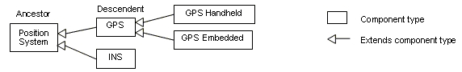

Previous
Next
Previous
Next 
| 4.3 Component Types |
A component type specifies the external interface of
a component that its implementations satisfy.
It contains declarations that represent features of a component and property associations.
Features of a component are ports, port groups, data components contained in the component that
are made externally accessible, required access to externally provided components, and
subprograms that are execution entrypoints to the component along with parameter declarations for
the specification of the data values that flow into and out of subprograms. The ports and
subprograms of a component can be connected to compatible ports or subprograms of other
components through connections to represent control and data interaction between those
components. Required access to an external subcomponent, such as data or bus, is resolved
when subcomponents of this component type are declared.
Component types can declare flow specifications, i.e.,
logical flows of information from its incoming
ports to its outgoing ports that are realized by their implementations.
Component types can be declared in terms of other component
types, i.e., a component type can
extend another component type – inheriting its declarations and property associations.
If a
component type extends another component type, then features, flows, and property associations
can be added to those already inherited. A component type extending another component type
can also refine the declaration of inherited feature and flow declarations by more completely
specifying partially declared component classifiers and by associating new values with properties.
Component type extensions form an extension hierarchy,
i.e., a component type that extends
another component type can also be extended. We use AADL graphical notation (see Annex A) to
illustrate the extension hierarchy in Figure 2. For example, component type GPS extends
component type Position System inheriting ports declared in Position System. It may add a port,
refine the data type classifier of a port incompletely declared in Position System, and overwrite the
value of one or more properties. Component types being extended are referred to as ancestors,
while component types extending a component type are referred to as descendents.

Figure 2 Component Type Extension Hierarchy
Component types may also be extended using an annex_subclause
to specify additional
characteristics of the type that are not defined in the core of the AADL (see Section 4.6)
Syntax
component_type ::=
component_category defining_component_type_identifier
[ features ( { feature
}+ | none_statement ) ]
[ flows ( { flow_spec
}+ | none_statement ) ]
[ properties ( { component_type_property_association
}+ |
none_statement ) ]
{ annex_subclause }*
end defining_component_type_identifier ;
component_type_extension ::=
component_category defining_component_type_identifier
extends unique_component_type_identifier
[ features ( { feature
| feature_refinement }+ | none_statement ) ]
[ flows ( { flow_spec
| flow_spec_refinement }+ | none_statement ) ]
[ properties ( { component_type_property_association
}+ |
none_statement ) ]
{ annex_subclause }*
end defining_component_type_identifier ;
component_category ::=
software_category
| execution_platform_category
| composite_category
software_category ::= data | subprogram | thread
| thread group |
process
execution_platform_category ::= memory | processor
| bus | device
composite_category ::= system
unique_component_type_identifier ::=
[ package_name ::
] component_type_identifier
NOTES:
The above grammar rules
characterize the common syntax for all component categories. The sections
defining each of the component categories will specify further restrictions on the syntax.
The features, flows,
and properties subclauses of the component type are optional, or require an explicit
empty subclause declaration. The latter is provided to accommodate AADL modeling guidelines that
require explicit documentation of empty subclauses. An empty subclause declaration consists of the
reserved word of the subclause and a none statement ( none ; ).
The annex_subclause of
the component type is optional.
Naming Rules
The defining identifier for a component type must
be unique within the anonymous namespace or
within the package namespace of the package within which it is declared.
Each component type has an interface namespace for
defining identifiers of features and flow
specifications. That is, defining feature and defining flow specification identifiers must be unique
in
the interface namespace.
The component type identifier of the ancestor in a component
type extension, i.e., that appears
after the reserved word extends, must be defined in the specified package namespace. If no
package name is specified, then the identifier must be defined in the namespace of the package
the extension is declared in, or in the anonymous namespace if the extension is declared in the
AADL specification directly.
When a component type extends another component
type, a component type interface
namespace includes all the identifiers in the interface namespaces of its ancestors.
A component type that extends another component
type does not include the identifiers of the
implementations of its ancestors.
The defining identifier of a feature must be unique in
the interface namespace of the component
type.
The refinement identifier of a feature refinement refers
to the closest refinement or the defining
declaration of the feature going up the component type ancestor hierarchy.
Legality Rules
The defining identifier following the reserved
word end must be identical to the defining identifier
that appears after the component category reserved word.
The features, flows, and properties
subclauses are optional. If a subclause is present but empty,
then the reserved word none followed by a semi-colon must be present.
A component type declaration that does not extend another
component type must not contain
feature refinement declarations.
The category of the component type being extended must
match the category of the extending
component type.
Semantics
A component type represents the interface specification
of a component, i.e., the component
category, the features of a component, and property values. A component implementation denotes
a component, existing or potential, that is compliant with the category, features and required
subcomponents and properties declared for components of that type. Component implementations
are expected to satisfy these externally visible characteristics of a component. The component
type provides a contract for the component interface that users of the component can depend on.
The component categories are: data, subprogram, thread,
thread group, and process (software
categories); processor, bus, memory, and device (execution platform categories); system
(compositional category). The semantics of each category will be described in later sections.
Features of a component are interaction points with other
components, i.e., ports and port groups;
server subprograms, subprograms and parameters; required subcomponent access; and provided
subcomponent access. Ports, port groups and subprograms specify both incoming and outgoing
interaction points. Required subcomponent access declarations represent references to
components that are not contained in the current component but must be accessed by the
component. If accessed by multiple components they become shared components. Ports, port
groups, subprograms, provided and required subcomponent access are described in Section 8.
Flow specifications indicate whether a flow of data or
control originates within a component,
terminates within a component, or flows through a component from one of its incoming ports to one
of its outgoing ports.
A component type can contain incomplete feature
declarations, i.e., declarations with no
component classifier references or just the component type name for a component type with
more
than one component implementation. The component implementation may not exist yet or one of
several implementations may have not been selected yet. The use of incomplete declarations is
particularly useful during early design stages where details may not be known or decided.
A component type can be declared as an extension of another
component type resulting in a
component type extension hierarchy, as illustrated in Figure 2. A component type extension can
contain refinenment declarations permit incomplete feature declarations to be completed and new
property values to be associated with features and flow specification declared in a component type
being extended. In addition, a type extension can add feature declarations, flow specifications,
and
property associations. This supports evolutionary development and modeling of system families
by
declaring partially complete component types that get refined in extensions.
Properties are predefined for each of the component categories
and will be described in the
appropriate sections. See Section 10.3 regarding rules for determining property values.
Examples
system File_System
features
-- access to a data component
root: requires
data access FileSystem::Directory.hashed;
end File_System;
process Application
features
-- a data out port
result: out data port
App::result_type;
home: requires data
access FileSystem::Directory.hashed;
end Application;